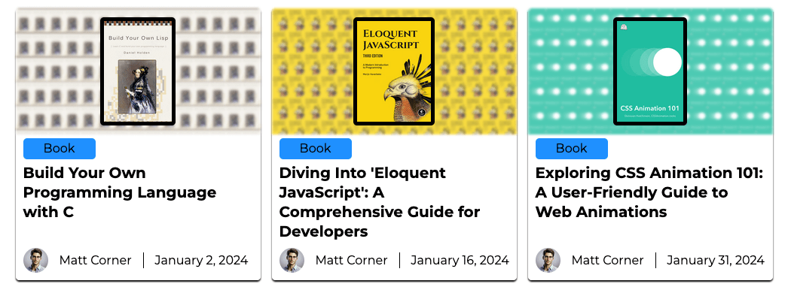
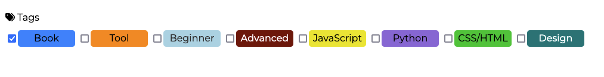

The Journey of Code Corner: From Idea to Reality
Insights and Reflections from Behind the Keyboard
 Matt Corner
February 8, 2024
Matt Corner
February 8, 2024
Introduction
Welcome to the inside story of Code Corner, a blog I created to share my findings of free programming resources online. Here, I'll tell you how it all started, what makes Code Corner special, and what I've learned along the way. If you've ever wondered what goes into building a blog like this, you're in the right place.
How it Started
My adventure began with a book named "Pro Git," a fantastic resource that was surprisingly free. This book opened my eyes to the wealth of free learning materials available online. As I was about to start a project for school, which required creating a blog, I decided to focus on sharing these kinds of resources. That's how Code Corner was born - out of a desire to make learning programming accessible to everyone.

Mission and Vision
Code Corner's mission is straightforward: to share free programming books and tools with everyone. I wanted to create a space where anyone interested in programming could find valuable resources without hitting a paywall. It's not just about sharing links; it's about ensuring these resources are truly helpful and can make learning easier for everyone.
Building the Blog: Technical Insights
Building Code Corner involved more than just writing posts. I used HTML, CSS, and JavaScript to set up the site and chose WordPress as a back-end tool to manage content better. This setup allowed me to focus on what matters most: the content. I also made sure the site was easy to navigate, with a clear structure and useful features like a tagging system.
Content Strategy: Books & Tools
For each piece of content on Code Corner, I dive deep into research. Out of hundreds of options, I select the ones that truly stand out. So far, I've covered a range of topics, from CSS animations to creating your own programming language. My aim is always to provide resources that I've personally vetted and believe will be valuable to my readers.
Tagging System and User Navigation
To make finding the right resources easier, I introduced a tagging system. Tags like "Beginner", "Advanced", "JavaScript" and "Python" help users quickly find content that matches their interests and skill level. This system is part of my commitment to making Code Corner as user-friendly as possible.
Engaging with the Community
Feedback and community engagement are crucial for Code Corner. I'm always open to suggestions and corrections from readers. This interaction helps ensure the information on the blog remains accurate and up-to-date. Looking ahead, I'm excited about the possibility of featuring guest authors to introduce new perspectives.
Reflections and Looking Forward
This journey has been incredibly rewarding, and there's so much more I want to do with Code Corner. As I prepare to finish this project and continue beyond the academic requirement, I'm filled with ideas for new features and content. Code Corner isn't just a school project; it's a passion project that I hope will benefit many learners.
Conclusion
Thank you for joining me on this behind-the-scenes tour of Code Corner. My hope is that this blog serves as a valuable resource for your programming journey, just as it has for mine. Whether you're here to find your next learning resource or just curious about the world of programming, Code Corner is here to guide you.